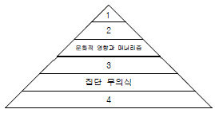
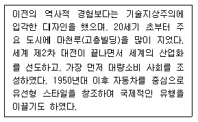
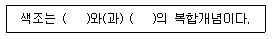
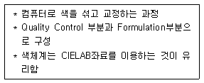

컬러리스트기사 (2013-08-18 기출문제)
1과목: 색채심리 마케팅
1. 다음 중 구매결정과정에 영향을 미치는 주요 요인이 아닌 것은?
- 구매의 중요성
- 대체 상품의 존재여부
- 지적 수준
- 개성
(정답률: 54%)

2. 고객의 관점에서 느끼고 필요로 하는 것을 충족시킴으로써 더 높은 가치를 교환할 수 있다고 보는 마케팅 구성요소인 4C와 관련이 없는 것은?
- Consumer
- Cost
- Comfort
- Communication
(정답률: 24%)
3. 자존심, 인식, 지위 등과 관련이 있는 매슬로우의 욕구단계는?
- 생리적 욕구
- 안전 욕구
- 사회적 욕구
- 존경 욕구
(정답률: 34%)
4. 성별에 따른 색채선호의 설명이 옳은 것은?
- 남성은 여성에 비해 남색, 보라, 자주, 빨강을 선호한다.
- 여성은 탁한 색이나 어두운 색을 선호한다.
- 여아에 비해 남아들의 색에 대한 기호가 다양화되어 있다.
- 여아는 난색계, 남아는 한색계에 대한 선호도가 높다.
(정답률: 75%)
5. 다음 중 태양빛의 영향으로 강렬한 순색계와 녹색을 선호하는 지역은?
- 뉴질랜드
- 케냐
- 그리스
- 일본
(정답률: 40%)
6. 구매의사결정에 영향을 미치는 요인 중 소속집단과 관련된 것은?
- 사회적 요인
- 문화적 요인
- 개인적 요인
- 심리적 요인
(정답률: 43%)
7. 시장의 유행성 중 수용기 없이 도입기에 제품의 수명이 끝나는 유형은?
- 플로프(Flop)
- 패드(Fad)
- 크레이즈(Craze)
- 트렌드(Trend)
(정답률: 27%)
8. 다음 중 색채계획 시 유행색에 가장 민감한 것은?
- 주방용품
- 가전제품
- 사무용품
- 의류제품
(정답률: 53%)
9. 사용경험, 사용량, 브랜드 충성도, 가격 민감도 등과 관련이 있는 시장 세분화 방법은?
- 인구학적 세분화
- 행동분석적 세분화
- 지리적 세분화
- 사회문화적 세분화
(정답률: 64%)
10. 다음에 제시된 제품과 그 색채 적용사례들 중 안전한 제품 사용을 위한 바람직하지 않은 것은?
- 휴대용 은색 가스버너의 점화장치를 미적인 면을 고려하여 은색으로 배색하였다.
- 노란색 전기 토스터의 전원 버튼을 크고 둥근 모양으로 디자인하고 빨간색으로 배색하였다.
- 파란색 전기 청소기의 정지 버튼을 진한 핑크색으로 하고 돌출된 모양으로 만들었다.
- 정수기의 뜨거운 물이 나오는 꼭지를 빨간색으로, 차가운 물이 나오는 꼭지를 파란색으로 하였다.
(정답률: 54%)
11. 다음 중 라이프스타일에 관한 설명이 틀린 것은?
- 소비자가 어떤 방식으로 시간과 재화를 사용하면서 세상을 살아가는가에 대한 선택의 의미이다.
- 라이프스타일에 따른 소비자 시장의 연구는 소비자가 어떤 활동, 관심, 의견을 가지고 있는가를 중심으로 이루어진다.
- 라이프스타일은 소득, 직장, 가족 수, 지역, 생활주기 등을 기초로 변화된다.
- 라이프스타일은 사회의 변화에 관계없이 개인의 가치관에 따라서 변화된다.
(정답률: 55%)
12. 마케팅의 변천된 개념과 그에 대한 설명이 틀린 것은?
- 제품 지향적 마케팅 : 제품 및 서비스의 생산과 유통을 강조하여 그 효율성을 개선
- 판매 지향적 마케팅 : 소비자의 구매유도를 통해 판매량을 증가시키기 위한 판매기술의 개선
- 소비자 지향적 마케팅 : 고객의 요구를 이해하고 이에 부응하는 기업의 활동을 통합하여 고객 욕구충족
- 사회 지향적 마케팅 : 기업이 인간 지향적인 사고로 사회적 책임을 다하는 것
(정답률: 25%)
13. 프랭크 H. 만케의 6단계 색경험 피라미드에서 각 단계에 해당하는 내용의 연결이 틀린 것은?

- 1 : 개인적 관계
- 2 : 시대사조, 패션, 스타일의 영향
- 의식적 상징화 - 연상
- 색자극에 대한 심리학적 반응 1
(정답률: 25%)
14. 색채정보 분석방법 중 의미의 요인분석에 해당하는 주요요인이 아닌 것은?
- 평가차원(Evaluation)
- 역능차원(Potency)
- 활동차원(Activity)
- 지각차원(Perception)
(정답률: 19%)
15. 항상 동일한 색을 고집하고 변화에 대한 거부감을 가지며 최신유행에 흔들리지 않는 색채반응 유형은?
- 컬러 포워드(Color Forward) 유형
- 컬러 프루던트(Color Prudent) 유형
- 컬러 로열(Color Loyal) 유형
- 컬러 트렌드(Color Trend) 유형
(정답률: 58%)
16. 색채 선호와 관련된 설명 중 틀린 것은?
- 일반적으로 연령이 낮을수록 원색 계열과 밝은 톤을 선호한다.
- 성인이 되면서 단파장의 파랑, 녹색을 점차 좋아하게 되는 경우가 많다.
- 일반적으로 선호되는 색채와 특정 제품의 선호색은 동일하다.
- 선호색은 성별, 연령별 집단에 따라 다른 차이를 보이기도 한다.
(정답률: 59%)
17. 심리학, 생리학, 조명학, 미학 등에 근거를 두고 과학적으로 선택하여 계획적인 색채를 사용하는 것은?
- 색채장식
- 색채선호
- 색채조절
- 색채대비
(정답률: 35%)
18. 코퍼레이트 컬러(Corporate Color)에 대한 설명이 틀린 것은?
- 한 기업이 자사의 아이덴티티를 소구하기 위하여 특정한 색을 기업의 색으로 사용하는 것이다.
- 기업에서 생산하는 제품을 포함한 제품 패키지 등의 기본 색으로서 색채의 통일된 사용 및 사용형태를 정한다.
- 기업 이념, 이상, 이미지, 사업목표, 주요 제품 등에 적절히 활용될 수 있는 색채를 사용한다.
- 코퍼레이트 컬러는 한 가지 색채를 정하여 사용하는 것이 원칙이다.
(정답률: 46%)
19. 색채의 공감각적 특징을 옳게 연결한 것은?
- 비렌 - 빨강 - 육각형
- 카스텔 - 노랑 - E 장조
- 뉴턴 - 주황 - 라 음계
- 모리스 데리베레 - 보라 - 머스크향
(정답률: 43%)
20. 찰스 오스굿이 고안한 의미미분법에 관한 설명으로 틀린 것은?
- 경관이나 제품, 색, 음향, 감촉 등 여러 가지 대상의 인상을 파악하는 방법으로 많이 사용된다.
- 분석으로 만들어지는 이미지 프로필은 각 평가대상마다 각각의 평정척도에 대한 평가 평균값을 구해 그 값을 선으로 연결한 것이다.
- 정량적 색채이미지를 정성적, 객관적으로 측정하는 방법이다.
- 설문대상의 수를 증가시킴에 따라 정확도를 더할 수 있으며 그 값은 수치적 데이터로 나오게 된다.
(정답률: 27%)
2과목: 색채디자인
21. 다음 중 시각디자인의 기능과 그 예시가 옳게 짝지어진 것은?
- 기록적 기능 - 신호, 활자, 문자, 지도
- 설득적 기능 - 포스터, 신문광고, 디스플레이
- 지시적 기능 - 신문광고, 포스터, 일러스트레이션
- 상징적 기능 - 영화, 인터넷, 심벌
(정답률: 15%)
22. 제품의 사용으로 디자인의 중심이 되는 합목적성과 가장 거리가 먼 것은?
- 유통적 기능
- 물리적 기능
- 생리적 기능
- 심리적 기능
(정답률: 24%)
23. 일반적인 색채계획 및 디자인 프로세스를 사전조사 및 기획 → 색채계획 및 설계 → 색채관리의 3단계로 분류할 때 색채계획 및 설계에 해당되지 않는 것은?
- 체크리스트 작성
- 색채구성·배색안 작성
- 시뮬레이션을 통한 검토·결정
- 색견본 승인
(정답률: 38%)
24. 다음 중 색채 계획을 성공적으로 수행하기 위한 설명으로 거리가 먼 것은?
- 자극적이지 않은 색을 사용해서 눈의 피로를 막는다.
- 명도 설계를 통해 조명의 효율을 높인다.
- 고층 아파트의 밝은 색은 거리가 밝고 명령하게 한다.
- 다양하고 화려한 고채도의 색들을 사용하여 업무 집중률을 높인다.
(정답률: 54%)
25. 흐름, 끊임없는 변화, 움직임을 뜻하는 라틴어로 1960년대에서 1970년대에 걸쳐 독일의 여러 도시를 중심으로 일어난 국제적 전위예술운동은?
- 플럭서스
- 해체주의
- 페미니즘
- 포토리얼리즘
(정답률: 40%)
26. 독일의 베르트하이머(Wertheimer)가 중심이 된 게슈탈트(Gestalt) 학파가 제창한 그루핑 법칙이 아닌 것은?
- 근접요인
- 폐쇄요인
- 유사요인
- 비대칭요인
(정답률: 38%)
27. 완성될 대상물의 상태를 미리 예상하기 위해 색의 양상을 표현해 보는 것으로, 보다 적절한 컬러를 평가하기 위해 제작하는 것은?
- 이미지 스케치(Sketch)
- 컬러시뮬레이션(Simulation)
- 이미지 콜라주(Collage)
- 컬러 스와치(Swatch)
(정답률: 40%)
28. 시각적으로 일어나는 착각현상의 착시가 잘 나타나는 예로 적합하지 않은 것은?
- 길이의 착시
- 면적의 착시
- 방향의 착시
- 형태의 착시
(정답률: 20%)
29. 디자인의 궁극적인 목적은?
- 산업과 과학기술의 발달을 돕는 것
- 인간생활을 보다 편리하고 윤택하게 하는 것
- 사람들의 시선을 집중시키는 것
- 인간의 마음과 감각, 영감을 활발하게 하는 것
(정답률: 43%)
30. 산업화 과정의 부산물로 생태계 파괴가 인류를 위협하는 상황에서 현대 디자인이 염두에 두어야 할 요건은?
- 통일성
- 다양성
- 친자연성
- 보편성
(정답률: 43%)
31. 기존제품의 재료나 기능 또는 형태를 개량하고 개선하는 것은?
- 트렌드 디자인(Trend Design)
- 리디자인(Re-Design)
- 이미지 디자인(Image Design)
- 혁신 디자인(Advanced Design)
(정답률: 54%)
32. 색채계획에 따른 주조색, 보조색, 강조색의 배색에 대한 설명이 틀린 것은?
- 주조색 - 전체의 70% 이상을 차지하는 색이다.
- 주조색 - 전체적인 이미지를 좌우하게 된다.
- 보조색 - 통일감 있는 보조색은 변화를 주는 역할을 담당한다.
- 강조색 - 전체의 30% 정도이므로 디자인 대상을 변화시키기 어렵다.
(정답률: 50%)
33. 다음 CI(Corporate Identity)의 3대 기본 요소로 가장 거리가 먼 것은?
- CI(Color Identity)
- BI(Behavior Identity)
- MI(Mind Identity)
- VI(Visual Identity)
(정답률: 20%)
34. 보기의 디자인 특징과 관련한 나라는?

- 미국
- 독일
- 이탈리아
- 일본
(정답률: 44%)
35. 다음 ( )에 각각 들어갈 용어를 옳게 짝지은 것은?

- 색상, 채도
- 채도, 배색
- 명도, 채도
- 배색, 색상
(정답률: 34%)
36. 다음 중 유니버셜디자인의 원칙과 거리가 먼 것은?
- 모든 사람이 불편 없이 사용할 수 있을 것
- 사람마다 자기 나름대로 사용방법을 선택 할 수 있을 것
- 실수를 하면 중대한 결과를 초래해 사용 시 유의하도록 할 것
- 사용자에게 효과적인 필요정보를 전달하도록 디자인 할 것
(정답률: 45%)
37. 1900년을 전후하여 파리를 중심으로 일어난 신예술운동은?
- 아트 앤 크래프트
- 아르누보
- 유겐트 스틸
- 시세션
(정답률: 36%)
38. 토속적, 민속적 디자인의 의미로 근대의 주류 디자인적 관점에서 무시되어 왔으나 20세기 중반 이후 건축가, 인류학자, 미술사가 등에 의해 그 가치를 새롭게 주목받게 된 디자인은?
- 반디자인(Anti-Design)
- 아르데코(Art Deco)
- 스칸디나비아 디자인(Scandinavian Design)
- 버내큘러 디자인(Vernacular Design)
(정답률: 32%)
39. 메이크업 시 외향적이고 활달하며 명랑한 개성을 나타내고자 할 때 가장 적합한 색상은?
- 퍼플계의 우아한 색상
- 그린계의 차분한 색상
- 블루계의 차가운 색상
- 레드계의 따뜻한 색상
(정답률: 39%)
40. 디자인에 있어 심미성에 관한 설명으로 옳은 것은?
- 디자인의 목적에 합당한 수단으로 디자인을 성취하였는가에 관한 기준이다.
- 디자인이 사회적 차원에서 이루어질 때 디자인의 개념화와 제작과정 수준을 평가하는 기준이다.
- 디자인에 기대되는 물리적 기능을 잘 수행하는가를 평가하는 항목이다.
- 디자인에서 드러나는 스타일(양식), 유행, 민족성, 시대성, 개성 등이 복합적으로 반영된 내용이라고 할 수 있다.
(정답률: 39%)
3과목: 색채관리
41. 다음 중 디지털 색채 디바이스(Device)에 대한 설명으로 옳은 것은?
- 프린터의 해상도는 PPI로만 표시한다.
- CCD는 반도체 소자의 일종인 전하 결합 소자를 말하며 하나의 소자로부터 인접한 다른 소자로 전하를 전송할 수 있는 소자를 말한다.
- 모니터 화소의 색상은 빨강, 노랑, 파랑의 3가지 색상 스펙트럼 요소들이 섞여서 만들어진다.
- 해상도란 디스플레이 모니터 내의 포함되어 있는 화소의 면적을 말하며, DPI로만 표시한다.
(정답률: 29%)
42. 색채 영역과 혼색방법에 관한 설명이 틀린 것은?
- 모니터 화면의 형광체들은 가법혼색의 주색 특징에 따라 선별된 형광체를 사용한다.
- 감법혼색은 각 주색의 파장 영역이 좁을수록 색역이 확장된다.
- 컬러프린터의 발색은 병치혼색과 감법혼색을 같이 활용한 것이다.
- 감법혼색에서 시안(Cyan)은 600nm이후의 빨강색 영역의 반사율을 효과적으로 감소시킨다.
(정답률: 31%)
43. 보기의 설명에 해당하는 것은?

- CMM
- HSB
- CCM
- RGB
(정답률: 43%)
44. 색채 측정 결과에 반드시 기록해야 할 필요가 없는 것은?
- 색채 측정 방식
- 3회 이상 측정한 전체 측정값
- 표준 관측자
- 표준광의 종류
(정답률: 29%)
45. 육안검색에 관한 설명으로 틀린 것은?
- 시료면, 표준면 및 배경은 동일 평면상에 있는 것이 바람직하다.
- 자연광은 주로 남쪽 하늘 주광을 사용한다.
- 육안 비교 방법은 표면색 비교에 이용된다.
- 시료면 및 표준면의 모양이나 크기를 조정할 필요가 있는 경우에는 마스크를 사용한다.
(정답률: 15%)
46. 염료의 종류와 그 특징에 대한 설명으로 틀린 것은?
- 형광염료 - 종이나 흰천 등을 더욱 희게 보이게 하기 위해 사용한다. 스틸벤계, 옥사졸계, 쿠말린계 등의 종류가 있다.
- 염기성염료 - 염료가 수용액 속에서 양이온으로 되어있기 때문에 카티온 염료라고도 하며 색깔이 선명하고 물에 잘 용해되어 착색력이 좋다.
- 안료수지염료 - 나프톨 유도체가 커플링 성분으로 많이 사용되며 양자(兩者)가 반응하여 염색 되도록 한다.
- 산성염료 - 양모, 견, 나일론 등 아미드계 섬유를 염색 하는 것으로 이온결합방법으로 염색된다.
(정답률: 58%)
47. 육안 조색의 특징에 대한 설명 중 틀린 것은?
- 오차 범위가 크다.
- 측색기의 도움 없이 조색 할 수 있다.
- 메타메리즘이 발생 할 수 있다.
- 인공광원보다는 자연광에서 작업하도록 한다.
(정답률: 19%)
48. 모니터나 프린터 등과 같이 색역이 다른 매체를 통하여 영상의 색채를 일치시키고자 할 때, 즉 자연물의 사진이나 모니터의 화면을 컬러프린터로 출력하고자 할 때 색채를 일치시키는 컬러매칭 방법으로 가장 바람직한 것은?
- 분광학적인 방법
- 측색에 근거한 방법
- 컬러어피어런스에 의한 방법
- 색료의 일치에 의한 방법
(정답률: 16%)
49. 색채 측정 방법 중 필터식 색채계에 대한 설명으로 틀린것은?
- 색채를 생산하는 현장에서 색채관리를 하는데 효율적이다.
- 기준이 되는 색채와의 비교 평가에 따른 품질관리가 용이하다.
- 조건등색이나 색료의 변화에 따른 근본적인 문제점에는 대응할 수 없는 한계점이 있다.
- 색채 처방을 산출하기 위한 자동배색에 사용될 수 있는 측정데이터를 직접 활용하는데 주로 사용된다.
(정답률: 20%)
50. 다음 중 탄소 함유량이 분류의 중요한 요인이며 함유된 탄소량에 따라 성질이 달라지기도 하는 것은?
- 철재
- 플라스틱
- 섬유
- 페인트
(정답률: 62%)
51. 프린터를 이용해 출력한 영상물의 색 표현에 영향을 주는 것으로 가장 거리가 먼 것은?
- 잉크 종류
- 종이 종류
- 관측 조명
- 영상 파일 포맷
(정답률: 24%)
52. 광원에서 나온 빛을 천장이나 벽에 부딪혀 확산된 반사광으로 비추어 효율은 떨어지지만 그늘짐이나 눈부심이 없고 차분한 분위기를 연출할 수 있는 조명 방식은?
- 직접조명
- 간접조명
- 반간접조명
- 전반확산조명
(정답률: 22%)
53. 육안검색의 정확한 검사를 위한 관찰자의 조건이 아닌 것은?
- 안경을 착용할 경우에는 무색투명한 렌즈의 안경을 사용한다.
- 연속해서 비교하는 경우 주기적으로 눈을 쉬게 한다.
- 선명한 색을 본 다음 보색이나 옅은 색을 보면 안된다.
- 색의 관찰은 몇 분간 유채색에 순응한 상태에서 한다.
(정답률: 47%)
54. 색의 용어에 대한 설명이 틀린 것은?
- 자극역 : 2가지 자극이 구별되어 지각되기 위하여 필요한 자극 척도상의 최소의 차이
- 광원색 : 광원에서 나오는 빛의 색, 광원색은 보통 색자극치로 표시
- 플리커 : 상이한 빛이 비교적 작은 주기로 눈에 들어오는 경우 정상적인 자극으로 느껴지지 않는 현상
- 등색 : 2가지 색자극이 같다고 지각하는 것 또는 같게 되도록 조절하는 것
(정답률: 28%)
55. Isomerism에 대한 설명으로 가장 옳은 것은?
- 어떤 특정 조건의 광원이나 관측자의 시감에 따라 색이 일치하는 것을 말한다.
- 특정한 광원 아래에서는 동일한 색으로 보이나 광원의 분광 분포가 달라지면 다르게 보인다.
- 표준광원 A, 표준광원 D 등으로 분광분포가 서로 다른 광원을 이용하여 평가한다.
- 분광 반사율이 정확하게 일치하는 완전한 물리적인 등색을 말한다.
(정답률: 19%)
56. 표면광택에 대한 설명으로 옳은 것은?
- 투과하는 빛의 굴절각이 크면 클수록 표면의 정반사 성분은 커진다.
- 표면에서 정반사되는 빛의 성분은 도색층의 색채와 일치한다.
- 표면에서 정반사되는 빛의 성분은 도색층의 보색과 일치한다.
- 빛이 매질의 경계면을 통과할 때에는 항상 같은 량의 빛이 정반사된다.
(정답률: 43%)
57. 다음 중 유한한 면적을 갖고 있는 발광면의 밝기를 나타내는 양을 의미하는 용어는?
- 비시감도
- 분광밀도
- 휘도
- 빛
(정답률: 34%)
58. CCM을 도입하는 목적 및 장점과 거리가 먼 것은?
- 조색의 시간단축
- 메타메리즘 예측
- 원가절감
- 소품종 대량생산
(정답률: 34%)
59. 육안검색 시 적합한 작업면의 크기는?
- 최소 150mm x 200mm 이상
- 최소 200mm x 300mm 이상
- 최소 250mm x 350mm 이상
- 최소 300mm x 400mm 이상
(정답률: 13%)
60. 색채의 소재에 대한 설명 중 틀린 것은?
- 음료, 소시지, 과자류 등에 주로 사용되는 색료는 영양 가치는 없고 유독성이 없어야 한다.
- 유기물질로 이루어진 종이의 경우 가시광선뿐만 아니라 푸른색에 해당되는 빛을 거의 다 흡수한다.
- 직물 섬유나 플라스틱의 최종 처리 단계에서 형광성 표백제를 첨가하는 것은 내구성을 갖게 하기 위해서이다.
- 형광성 표백제는 태양광의 자외선을 흡수하여 푸른 빛 영역의 에너지를 가진 빛을 다시 방출하는 성질을 이용한다.
(정답률: 31%)
4과목: 색채지각론
61. 파장에 관한 설명 중 틀린 것은?
- 물체에서 반사되는 빛은 그 물체표면의 반사율(Reflectance)에 의해 결정된다.
- 햇빛과 같이 모든 파장이 유사한 강도를 갖는 빛을 백색광(White Light)이라 한다.
- 스펙트럼 상의 일부 파장만을 강하게 반사하는 선별적 반사로 무채색이 나타난다.
- 빛은 파장에 따라 서로 다른 색감을 일으킨다.
(정답률: 44%)
62. 어두운 밤에 거리를 지나가다가 반짝거리는 밝은 물체를 발견하게 되었다. 이는 어떤 감각요소에 의한 작용인가?
- 간상체
- 추상체
- 망점
- 홍채
(정답률: 47%)
63. 다음 색의 혼합방법 중 중간혼합이 아닌 것은?
- 망점인쇄의 혼합
- 컬러 슬라이드의 혼합
- 회전혼합
- 병치혼합
(정답률: 44%)
64. 작은 색채 샘플을 보고 색을 선택한 후 벽면 전체에 페인트칠 한 결과 원래의 색채 샘플 색과 다르게 보였다. 이러한 현상과 관련이 없는 것은?
- 이러한 현상을 '면적효과(Area Effect)'라 한다.
- 동일한 색이라도 면적이 넓어지면 명도가 높아지고 채도는 낮아진다.
- 넓은 벽면에 어떤 색을 칠하고자 할 때 원하는 색보다 명도와 채도가 낮은 색채 샘플을 선택하는 것이 좋다.
- 미국 공업규격(ASTM)은 엄밀한 판정을 위한 최소 색견본의 크기를 160 x 260mm로 규정하고 있다.
(정답률: 48%)
65. 경주용 자동차 경기에서 상대편을 심리적으로 위축시키기 위하여 자동차의 색을 속도감이 높아 보이게 만들려고 한다. 다음 중 가장 적합한 색은?
- 장파장색으로 명도가 높고 채도가 낮은 색
- 단파장색으로 중간 명도와 채도가 높은 색
- 장파장색으로 중간 명도와 채도가 높은 색
- 단파장색으로 명도가 높고 채도가 낮은 색
(정답률: 38%)
66. 색조에 따른 감정효과에 관한 설명 중 틀린 것은?
- 페일(Pale) 색조의 파랑은 팽창되어 보인다.
- 그레이시(Grayish) 색조의 파랑은 진정효과가 있다.
- 딥(Deep) 색조의 파랑은 부드러워 보인다.
- 다크(Dark) 색조의 파랑은 무겁게 느껴진다.
(정답률: 42%)
67. 에너지 절감을 위하여 여름에 벽면을 밝은 청색으로 칠하는 경우 느껴지는 색의 감정과 동일한 사례는?
- 가정용 약상자를 녹색으로 디자인하였다.
- 추위를 예상하여 스웨터를 주황색으로 만들었다.
- 가을 분위기가 나게 벽지를 연한 갈색으로 발랐다.
- 스마트폰을 최첨단 이미지가 느껴지게 은색으로 디자인 했다.
(정답률: 62%)
68. 다음 중 시인성이 가장 좋은 표지판은?
- 백색 바탕에 5Y 6/7의 글자
- 백색 바탕에 5B 8/2의 글자
- 백색 바탕에 5B 6/5의 글자
- 백색 바탕에 5G 3/2의 글자
(정답률: 20%)
69. 색의 대비 효과에 관한 설명 중 틀린 것은?
- 노란색 배경의 주황색은 더 붉게 보이고, 빨간색 배경의 주황색은 더 노랗게 보인다.
- 명도단계를 연속적으로 나열하였을 경우 인접한 색끼리 강하게 대비되는 현상이 나타난다.
- 파란색 물체의 배경색으로 채도가 낮은 색을 배치하면 그 물체의 색이 실제 보다 더 낮은 채도로 보인다.
- 동일한 색이라도 면적이 넓어지면 명도와 채도가 증가되어 더욱 밝고 선명해 보인다.
(정답률: 17%)
70. 딸기 잎 속에 가려진 빨갛게 익은 딸기를 잘 구분하지 못하는 색맹의 경우 어떤 시세포에 문제가 있는가?
- L 원추세포
- M 원추세포
- S 원추세포
- 막대세포
(정답률: 22%)
71. 회전혼합에 대한 설명 중 틀린 것은?
- 혼합된 색의 명도는 혼합하려는 색들의 중간 명도가 된다.
- 혼합된 색상은 중간색상이 되며, 면적에 따라 다르다.
- 보색 관계의 색상 혼합은 중간명도의 회색이 된다.
- 혼합된 색의 채도는 원래의 채도보다 높아진다.
(정답률: 56%)
72. 색의 중량감에 대한 설명 중 틀린 것은?
- 검정색은 무거워 보인다.
- 흰색은 가벼워 보인다.
- 고명도의 난색계열은 가벼운 느낌을 준다.
- 유채색에서는 중량감의 차이가 없다.
(정답률: 38%)
73. 가까이서 보면 여러 가지 색들이 좁은 영역을 나누고 있지만 멀리서 보면 이들이 섞여져서 하나의 색채로 보이는 혼합은?
- 병치혼합
- 가산혼합
- 감산혼합
- 보색혼합
(정답률: 58%)
74. 헤링의 색채지각에 관한 이론과 관련 없는 것은?
- 빛에 의해 분해(이화)와 합성(동화) 반응의 비율에 따라 색이 보인다.
- 빨강과 녹색, 노랑과 파랑이 대립적으로 발생한다는 반대색설을 말한다.
- 빨강, 초록, 파랑의 색광에 반응하는 수용기에 의해 색을 지각한다.
- 순응, 대비, 잔상과 같은 색각현상을 설명할 때 유용하다.
(정답률: 12%)
75. 5PB 4/4인 색이 갖는 감정효과가 아닌 것은?
- 후퇴되어 보인다.
- 팽창되어 보인다.
- 진정효과가 있다.
- 시간의 경과가 짧게 느껴진다.
(정답률: 47%)
76. 환경색채를 계획하면서 좀 더 부드러운 느낌이 되도록 색을 조정하려고 한다. 가장 적합한 방법은?
- 한색계열의 색을 사용한다.
- 채도를 낮춘다.
- 진출색을 사용한다.
- 명도를 낮춘다.
(정답률: 47%)
77. 빛의 성질에 관한 설명 중 틀린 것은?
- 자연현상에서 나타나는 대표적인 굴절현상은 무지개이다.
- 파란 하늘은 단파장의 빛이 대기 중에서 산란되어 나타나는 현상이다.
- 빛의 파동이 잠시 둘로 나누어진 후 다시 결합되는 현상이 간섭이다.
- 비눗방울 표면이 무지개색으로 보이는 것은 빛이 흡수되어 나타나는 현상이다.
(정답률: 45%)
78. 다음 중 여러 가지 파장의 빛이 유사한 강도를 갖고 고르게 섞여 있을 때 나타나는 색은?
- 보색
- 병치혼색
- 백색
- 유채색
(정답률: 24%)
79. 색채 현상(효과)에 관한 설명이 옳게 연결된 것은?
- 푸르킨예 현상 : 교통신호기의 색 중에서 빨강이 빨리 지각된다.
- 색음 현상 : 해가 질 때 빨강 꽃은 어두워 보이고 푸른 잎이 밝게 보인다.
- 베졸드 브뤼케 현상 : 주황색 원통에 빛이 강하게 닿는 부분은 노랑으로 보인다.
- 브로커 슐처 효과 : 석양에서 양초에 비친 연필의 그림자가 파랑으로 보인다.
(정답률: 50%)
80. 교차하는 검정 사각형 사이로 회색 잔상이 보이는 대비효과에 대한 설명으로 틀린 것은?
- 연변 대비의 한 종류이다.
- 허먼 그리드 효과라고 한다.
- 채도가 높은 그림에서도 이러한 명도 관상 효과가 나타난다.
- 주변이나 배경에 의해 명도가 달라져 보이는 현상에 의한 것이다.
(정답률: 27%)
5과목: 색채체계론
81. P.C.C.S 색체계의 표기인 2:R-4.5-9s의 설명 중 틀린 것은?
- 9s는 최고의 채도를 표시한다.
- 4.5는 명도를 표시한다.
- 명도는 0.5 단위로 되어 있다.
- 채도는 2 단위로 되어 있다.
(정답률: 41%)
82. CIE 표준 색체계의 설명으로 틀린 것은?
- XYZ 색체계가 대표가 된다.
- CIE는 빨강, 초록, 파랑의 3원색을 기본으로 한다.
- 감법원리와 관계가 깊다.
- CIE 색도도 중심은 백색이다.
(정답률: 22%)
83. 오스트발트 색체계의 설명으로 틀린 것은?
- 1943년 지각적인 등보도 분할의 불규칙성을 개량한 수정본을 만들게 되었다.
- 혼합하는 색량의 비율에 의하여 만들어진 체계이다.
- 기본색채는 완전한 흑색(B), 백색(W), 순색(C)으로 구성된다.
- 이론적으로는 가상적인 유채색에 대하여 물리적인 고찰에 근본을 둔 체계이다.
(정답률: 6%)
84. DIN 체계의 설명으로 옳은 것은?
- 5:3:2로 표기하며 5는 색상 T, 3은 명도 S, 2는 포화도 D를 의미한다.
- 색상을 주파장으로 정의하고 24개로 구분한다.
- 먼셀의 심리 보색설을 발전시킨 체계이다.
- 혼색계 체계로 다양한 색채를 표현할 수 있다.
(정답률: 38%)
85. ISCC-NIST 기본 색상으로 옳게 짝지어진 것은?
- Orange, Olive, Yellow Green
- Magenta, Orange, Yellow Green
- Orange, Magenta, Brown
- Olive, Yellow Green, Blue Green
(정답률: 0%)
86. 오행설에서의 색체와 계절, 방위, 오행이 바르게 대응한 것은?
- 백색 - 봄 - 서 - 수(水)
- 청색 - 가을 - 동 - 토(土)
- 적색 - 여름 - 남 - 화(火)
- 흑색 - 겨울 - 북 - 금(金)
(정답률: 40%)
87. 먼셀기호 2.5YR 4/8에 가장 가까운 색이름은?
- 자색
- 호박색
- 갈색
- 밤색
(정답률: 25%)
88. 12색상환을 기본으로 2색, 3색, 4색, 5색, 6색 조화를 주장한 사람은?
- 문·스펜서
- 요하네스 이텐
- 오스트발트
- 먼셀
(정답률: 20%)
89. L*C*h 체계에 대한 설명이 틀린 것은?
- L*a*b와 똑같이 L*은 명도를 나타낸다.
- C 값은 중앙에서 멀어질수록 작아진다.
- h는 +a*축에서 출발하는 것으로 정의하여 그곳을 0°로한다.
- 0°는 빨강, 90°는 노랑, 180°는 초록, 270°는 파랑이다.
(정답률: 35%)
90. 색채조화를 위한 올바른 계획 방향이 아닌 것은?
- 색채조화는 주변요인에 영향을 받으므로 상대적이기 보다 절대성, 개방성을 중시해야 한다.
- 공간에서의 색채조화를 위해서는 시간의 흐름에 따른 변화를 고려해야 한다.
- 자연의 다양한 변화에 따른 색조개념으로 계획해야 한다.
- 조화에 영향을 주는 변수와 인간과의 관계를 유기적으로 해석해야 한다.
(정답률: 42%)
91. 오스트발트 색체계의 색상번호 7~9에 해당하는 색상은?
- 빨강
- 녹색
- 파랑
- 노랑
(정답률: 20%)
92. 색채표준화의 목적 중 적합하지 않은 것은?
- 결과의 실용성
- 배열의 규칙성
- 속성의 명확성
- 정량적 등보성
(정답률: 25%)
93. L*a*b 색체계의 설명으로 틀린 것은?
- 물체의 색을 측정할 때 가장 많이 사용되고 있으며, 실제로 모든 분야에서 널리 사용되고 있다.
- L*a*b 색공간 좌표에서 L*은 명도, a*와 b*는 색방향을 나타낸다.
- +a*는 빨간색 방향, -a*는 노란색 방향, +b*는 초록방향, -b*는 파란 방향을 나타낸다.
- 조색할 색채의 오차를 알기 쉽게 나타내며 색채의 변화방향을 쉽게 짐작할 수 있다.
(정답률: 36%)
94. 먼셀 색체계에 관한 설명으로 옳은 것은?
- 색의 3속성에 따른 지각적인 등보도성을 가진 체계적인 배열
- 심리·물리적인 빛의 혼색실험에 기초를 둔 표색
- 표준 3원색인 적, 녹, 청의 조합에 의한 가법혼색의 원리 적용
- 혼합하는 색량의 비율에 의하여 만들어진 체계
(정답률: 34%)
95. 다음 중 주황 색상을 나타내는 색체계별 표기가 옳은 것은?
- 먼셀 색체계 - 5RY
- 오스트발트 색체계 - 5
- NCS 색체계 - R50Y
- P.C.C.S 색체계 - 5:yO
(정답률: 20%)
96. 미도에 관한 설명으로 틀린 것은?
- 미도 M이 0.35이상 되면 그 배색은 좋다고 본다.
- 균형 있게 선택된 무채색의 배색은 유채색 배색에 못지않은 아름다움을 나타낸다.
- 동일 색상은 조화가 좋다.
- 색상, 채도를 일정하게 하고 명도만 변화시키는 경우는 많은 색상을 사용한 것보다 미도가 낮다.
(정답률: 24%)
97. 5R 9/2와 5R 3/8인 색은 명도와 채도 측면에서 볼 때 문·스펜서의 어느 조화원리에 해당하는가?
- 유사조화(Similarity)
- 동등조화(Identity)
- 대비조화(Contrast)
- 제1부조화(1st Ambiguity)
(정답률: 13%)
98. 먼셀의 균형 이론을 설명한 것으로 옳은 것은?
- 저울을 이용하여 원리를 설명했다.
- 문·스펜서의 조화론에 영향을 주었다.
- 색상이 균형의 중심점이다.
- 난색과 한색의 비율이 균형의 핵심이다.
(정답률: 25%)
99. 커뮤니케이션을 목적으로 간편하게 만든 실용 색표집은?
- Munsell
- DIC
- NCS
- DIN
(정답률: 9%)
100. 일본색채연구소가 발표한 색채 시스템으로 주로 패션 등에 사용되는 체계는?
- RAL
- P.C.C.S
- JIS
- DIN
(정답률: 36%)